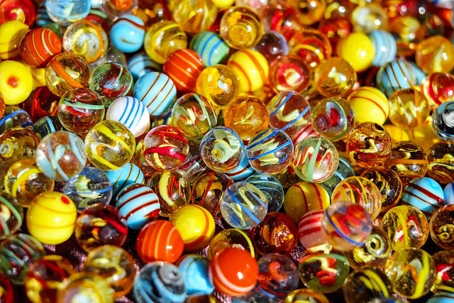

Learn
We are offering marble making classes as part of our introductory flameworking class. During the marble making section we will first learn to make a transparent "gravity" marble from borosilicate glass. We will then learn to use a marble mold and make interior and exterior striped marbles. We will also learn how to pull stringers.

The other part of our introductory flameworking class will consist of learning to make beads. We will make a free form bead and also make beads using a marver. We will make both plain and dotty beads. Students interested in using a lentil press will have the opportunity to make a focal bead.